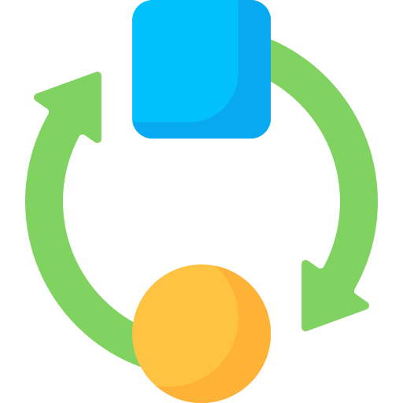
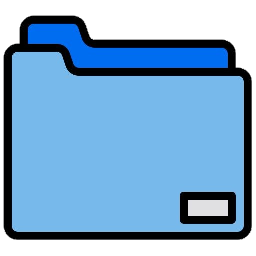

About me
Hola! I'm Cesar Dommar, a passionate computer engineer hailing from the vibrant country of Venezuela. My journey in the world of technology began with my studies, culminating in my graduation in 2019. Now, I am embarking on an exciting new chapter as I set my sights on the dynamic technology sector in Spain. While I may be a fresh face in the professional realm, my dedication to the craft and proficiency in programming languages such as Python, JavaScript, and PHP fuels my eagerness to contribute to innovative projects.

Technical Proficiency
With a strong foundation in computer engineering, I bring a robust skill set to the table. Programming has become second nature to me, with a focus on languages like Python, JavaScript, and PHP. Beyond the code, I channel my creativity into website design as a hobby, crafting visually appealing and user-friendly interfaces. Although I may not boast professional experience just yet, my proficiency in these technologies and my commitment to continuous learning position me as a promising candidate eager to make a meaningful impact in the tech landscape.

Aspirations and Outlook
My journey is marked by a fusion of technical expertise, a love for problem-solving, and a deep-seated passion for technology. While I may not have a professional track record, I am fueled by the enthusiasm to dive headfirst into the challenges and opportunities that the IT industry offers. My goal is to contribute meaningfully to the technological advancements in Spain, leveraging my skills and dedication to create innovative solutions. I am excited to embark on this professional adventure, ready to learn, grow, and make a positive mark in the dynamic world of technology. Let's connect and explore the endless possibilities together!
Adaptability and Learning
In addition to my technical prowess, my journey has instilled in me a strong sense of adaptability and a keen appetite for learning. Navigating the ever-evolving landscape of technology excites me, and I am committed to staying ahead of the curve by embracing emerging trends and methodologies. I believe that a willingness to learn is key to success in the dynamic field of IT, and I am eager to bring this mindset to a collaborative team where I can contribute and absorb knowledge simultaneously.
Project Highlights
While my professional experience might be in its infancy, I've undertaken personal projects that reflect my capabilities and dedication. From developing robust web applications to creating intuitive and responsive websites, these projects showcase my ability to transform concepts into tangible digital solutions. Each endeavor has been a valuable learning experience, reinforcing my passion for technology and equipping me with practical skills that I am eager to apply in a professional setting.

Commitment to Excellence
In my pursuit of a career in the technology sector, I am guided by an unwavering commitment to excellence. I approach every coding challenge, design project, and learning opportunity with a meticulous attention to detail and a determination to exceed expectations. I believe that a strong work ethic combined with a genuine passion for what I do will not only drive my personal growth but also contribute positively to any team or project I am a part of. I am enthusiastic about the prospect of bringing this dedication to a role in Spain's tech landscape, where innovation and excellence go hand in hand.